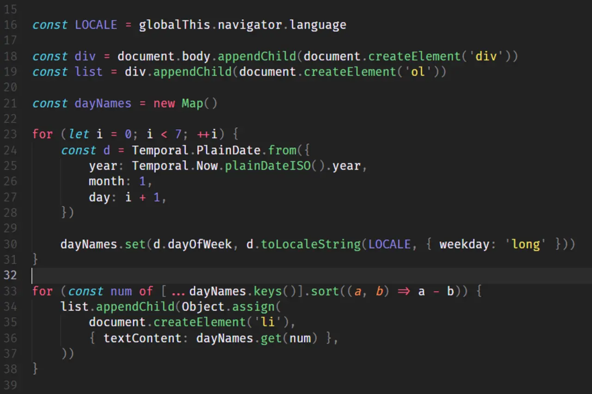

短答
客户端脚本在浏览器里运行，可以创建获取到的 HTML 里没有的元素。
这段代码创建一个 div、创建一个列表，并追加文字是在浏览器里算出来的项目。这些项目并没有写在示例的 HTML 里。它们只在脚本运行之后出现。当这些项目是产品列表、规格或指向其他文档的链接时，SEO 健康把这种模式当作风险。代码里那种按星期计算的写法是来源页上的例子。它不是要安装的功能，也不是一份地区报告。
定义
脚本可以增强 HTML 里已经有的列表，例如对服务器已经发出的节点排序。脚本也可以是列表的唯一作者。第二种情况会让获取失败。渐进增强把列表留在源代码里，再让脚本去重排。本页的代码属于第二种：列表项被创建并追加。把它当作风险的图片，而不是要贴进模板的代码。
渲染对爬虫意味着什么变化
把爬虫应该看见的列表留在 HTML 里，让脚本去增强它，而不是发明它。
获取 URL，并在源代码里搜索产品名。如果它们只存在于一段构建元素的脚本里，它们就还不是文档。一句“请启用 JavaScript”的 noscript 说明不能代替列表。在阻止脚本的情况下比较一条 URL。代码里的循环是“创建并追加”的图示。不要复制它，也不要把它里面的数字说成结果。

要检查什么
- 获取到的 HTML 中有产品或型号名称
- 脚本增强该列表，而不是制造唯一副本
- noscript 提示没有被当作唯一内容
- 在阻止脚本的情况下获取一条 URL
- 示例代码没有被贴进模板
一个结构示例
系列页的型号列表在 HTML 里是空的，由脚本为每个型号创建一个项目来填满。修复是在服务器上把型号渲染成列表项，并让脚本只标记当前项。不运行脚本的获取能看见名称。来源页上的代码仍然是相反模式的例子。
它不声称什么
客户端脚本不保证排名或引用。
Mika Visibility 把它归到哪里
Mika Visibility 把渲染当作 SEO 健康问题：当模板依赖 JavaScript 时，重要 HTML 能否在有脚本和无脚本两种情况下被获取并比较。这种比较不是 GEO 审计，也不是市场覆盖计划。发现要附在样例 URL 上。模板改完之后的再审计，用来确认修复。
这段代码显示节点是在浏览器里创建的。审计要在 HTML 里寻找这些节点。
常见问题
客户端脚本可以添加什么？
客户端脚本在浏览器里运行，可以创建获取到的 HTML 里没有的元素。
列表应该放在哪里？
把爬虫应该看见的列表留在 HTML 里，让脚本去增强它，而不是发明它。
客户端脚本能保证排名吗？
客户端脚本不保证排名或引用。
下一步
做一次结构化的 SEO + GEO 审计，查看健康发现、增长缺口和可以执行的蓝图。
更清晰的实体、答案、证据和上下文，会让页面更容易被理解与引用。任何回答产品中的结果都不作保证。